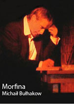

Książka ta opowiada o losach młodego żeglarza, Jima, który przez większość swojego życia marzył o dokonaniu heroicznego czynu.
„... jego myśli pochłonięte były wielkimi czynami; uwielbiał takie sny na jawie i swe urojone czyny. Były one najlepszą cząstką życia, jego najgłębszą prawdą, jego ukrytą rzeczywistością. Miały w sobie wspaniałe męstwo, … unosiły ze sobą jego duszę i upijały ją boskim nektarem, durząc bezgraniczną wiarą w siebie.”Autor opierając się na własnych doświadczeniach podaje opisy głodu narkotycznego, stanu upojenia i stopniowej degradacji funkcji psychicznych. Z łatwością można również wyodrębnić poszczególne etapy na drodze do całkowitej destrukcji, zaczynając od początkowego, ślepego zachwytu:
„W pierwszej chwili czuje się coś jakby lekki dotyk w okolicy karku. W następnej chwili przez mózg przepływa niespodziewanie chłodna fala, po czym nadchodzi niebywała jasność umysłu i wybuch aktywności. Ustępują absolutnie wszystkie przykre uczucia. Oto najwyższy punkt przejawu sił duchowych człowieka. Gdyby nie wykształcenie medyczne, powiedziałbym, że pracować naprawdę można dopiero po zastrzyku morfiny”,
Zachwyt ten wkrótce przeradza się w smutną samoświadomość tego, że drogi odwrotu już nie ma, a życie bez narkotyku jest cierpieniem ponad miarę.
„„Krótko mówiąc, człowiek jako taki już nie istnieje. Jest wyłączony z życia. To jego trup czeka, tęskni i cierpi. … Myślę, że podobnie czuje się żywcem pogrzebany, gdy łowi ostatnie pęcherzyki powietrza pod wiekiem trumny i rozszarpuje paznokciami skórę na piersi. Tak się czuje heretyk na stosie, który zwija się w mękach i jęczy, gdy pierwsze języki płomieni zaczynają lizać jego stopy…”
Myślę, że „Morfinę” Bułhakowa powinien przeczytać każdy psycholog, terapeuta stykający się w pracy z osobami uzależnionymi. Opowiadanie to jest nie tylko wspaniałą literacko demonstracją stanów emocjonalnych i procesów myślowych osoby uzależnionej, ale również wciągającą historią, która może posłużyć jako przestroga dla wszystkich, którzy wierzą, podobnie jak początkowo wierzył doktor Polakow, że zażywanie substancji psychoaktywnych może przebiegać bezkarnie.
Michaił Bułhakow , syn profesora Akademii Duchownej, urodził się w 1891 roku w Kijowie. Po ukończeniu studiów medycznych został skierowany w ramach mobilizacji wojskowej do niewielkiej miejscowości Nikolskoje, gdzie wraz z żoną prowadził szpital. Po okresie jednego roku powrócił do Kijowa i prowadził prywatną praktykę jako wenerolog. W 1919 roku, jako lekarz wojskowy ewakuuje się na północny Kaukaz. Tam ostatecznie porzuca medycynę dla swoich dwóch prawdziwych pasji – pisarstwa i teatru. W 1921 roku zamieszkuje na stałe w Moskwie.
Życie pisarza nie było łatwe. Przez większość czasu przeżywał trudności finansowe, przez co najmniej rok cierpiał na uzależnienie od morfiny. Żył w trudnych czasach, jako głęboko wrażliwa osoba nie mógł się pogodzić z zakłamaniem i okrucieństwem nowego reżimu. Za swoją prawdomówność został skazany na przymusowe milczenie przez krytykę, cenzurę i krzewicieli nowego porządku – całkowicie zakazano publikacji jego dzieł. Najbardziej sławna, filozoficzno-satyryczna powieść Mistrz i Małgorzata, została opublikowana drukiem dopiero 33 lata po śmierci autora.
Do najważniejszych dzieł autora można zaliczyć trzy powieści: Białą gwardię, Powieść teatralną, Mistrza i Małgorzatę oraz liczne opowiadania, m.in. Notatki na mankietach, Zapiski młodego lekarza, Morfinę, Diaboliadę, Fatalne jaja oraz Psie serce. Michaił Bułhakow napisał również wiele uznanych sztuk teatralnych.
Rafał Miętkiewicz
+48 515 972 624
rafalmietkiewicz@icloud.com
Podaj swój adres e-mail, aby otrzymywać informację o nowych artykułach.